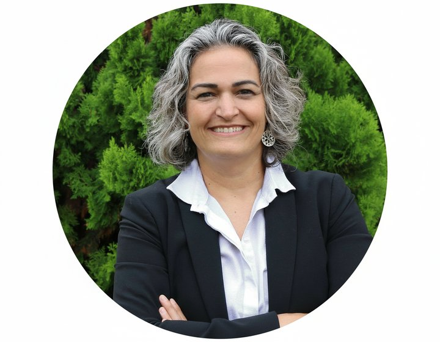

Skip to content
A
F
Ale Furtado
Turning priorities into results.
About
Services
The method
The test
Book a conversation

Ale Furtado
Turning priorities into results.
Save my contact
+33 7 81 73 33 39
letstalk@alefurtado.org
LinkedIn
WhatsApp
alefurtado.org
Scan to open my card
A
F
Turning priorities into results.